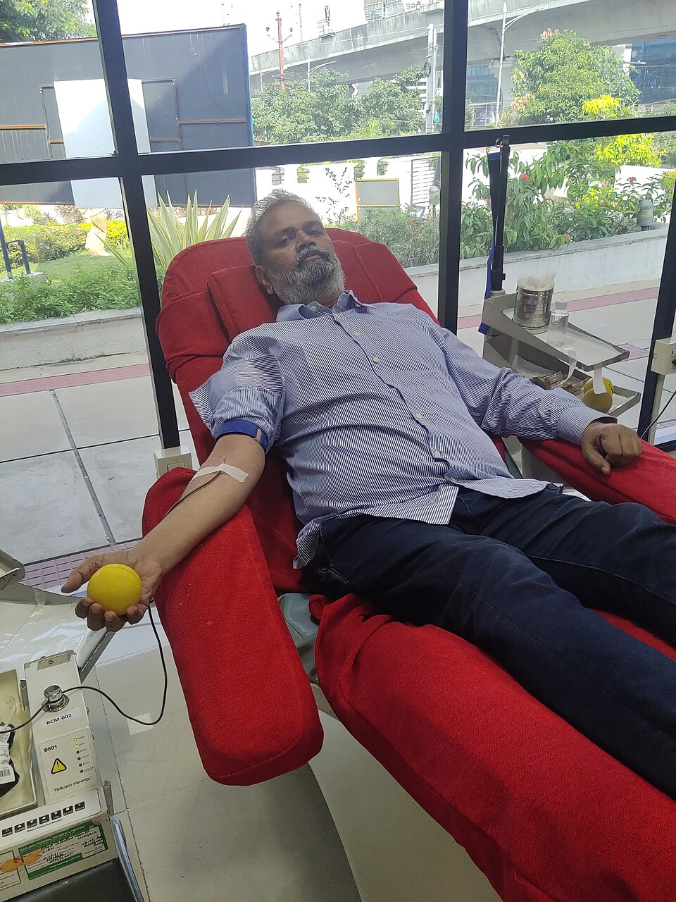
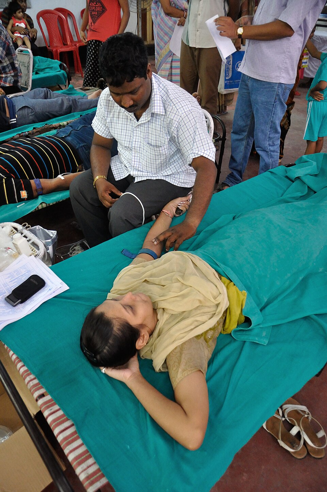
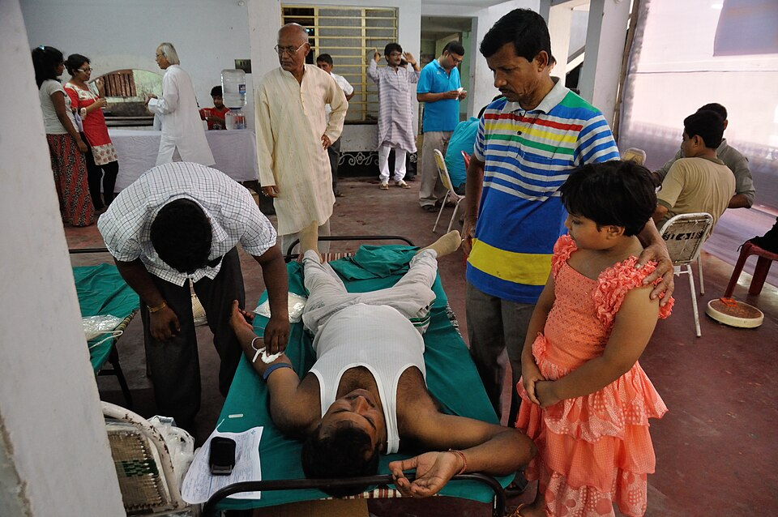
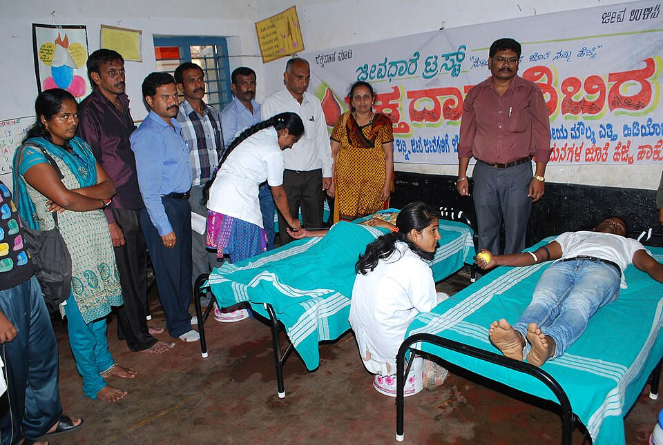
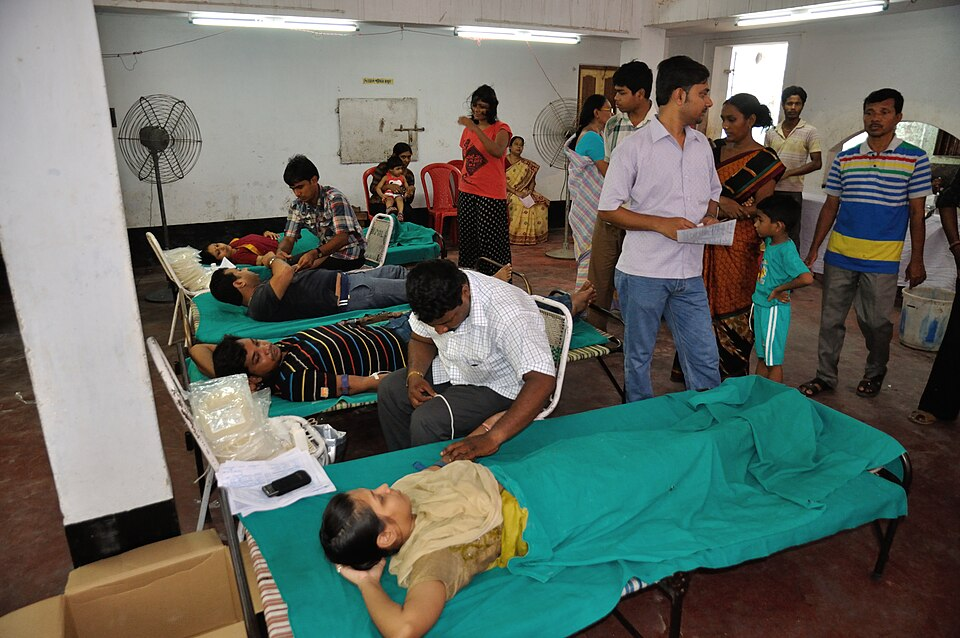
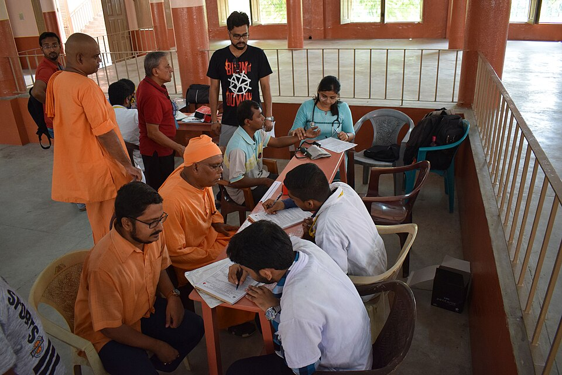

Emergency blood finder
Find a donor by blood group and city, or save a blood request a hospital can review. These photos are from donation camps in India.

Real photos from donation camps in Howrah, Baranagar, and Karnataka.





Four simple steps. The hospital still makes the medical decision.
Create a request with the blood group, city, and hospital.
Filter donors by blood group, city, and who is available.
Donors mark that they can give, and keep their city current.
A hospital checks safety, match, and the transfusion itself.
Pick a role. You can change it later by registering again.
This site connects people. It does not replace a blood bank.
Important: For a real emergency, call a hospital. Blood must be tested and matched before anyone receives it.